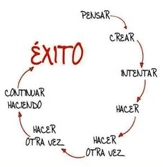

Estilo de vida
Fundación Apo
La Fundación Apo que esta en construcción, es una organización de derecho privado, sin ánimo de lucro, dedicada a brindar apoyo a niños y padres que se vean avocados a problemáticas de alejamiento de sus hijos, cuando uno de ellos no permite contacto con los niños y para prevenir las consecuencias negativas de esa práctica en el futuro de los menores y la familia.
La Fundación Apo, lidera la protección del Derecho Constitucional de los niños a tener una familia y no ser separados de ella, buscando alianzas público privadas.

Derechos reservados - Apo Colombia © - 2015